Mira
You see the world. Mira sees to the rest.
A mobile app that cuts the mental load of planning a trip.
It learns how you travel, helps you decide, and adapts when plans change, always leaving you in
control.
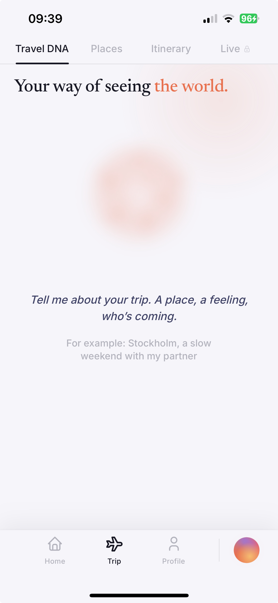
The problem was never finding options.
It was choosing between too many equally good ones.
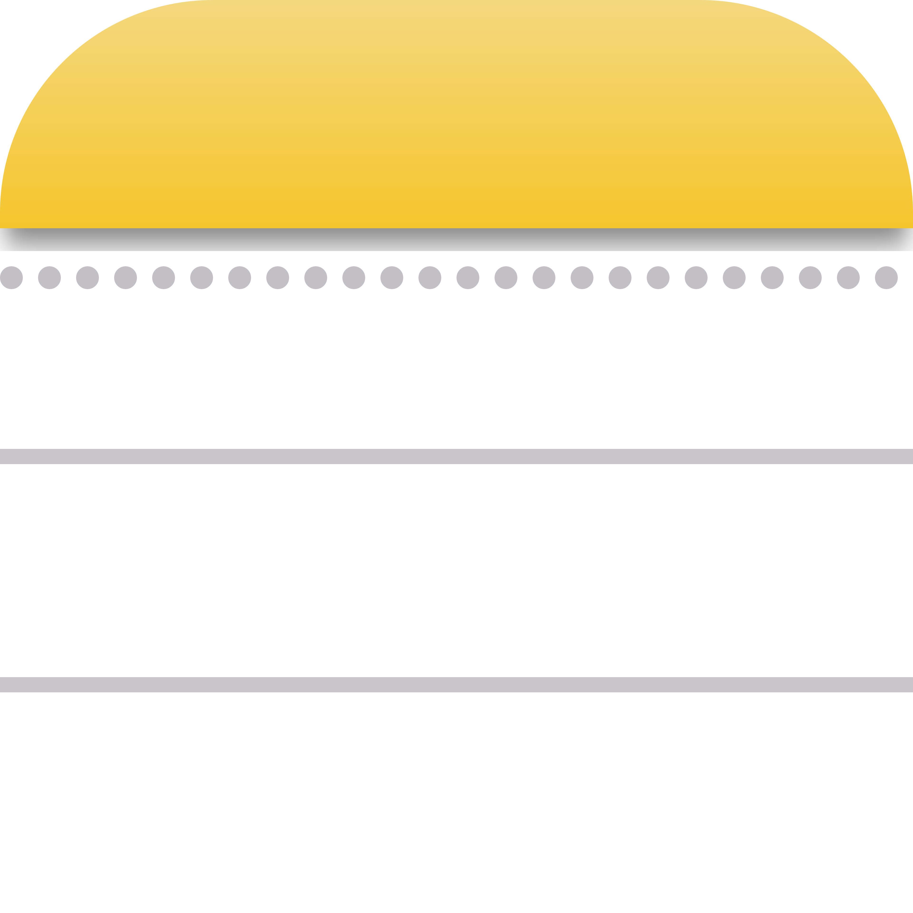
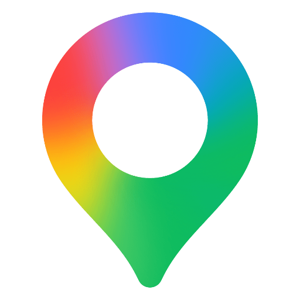
You're not short on things to do. You're buried in them, and deciding what's actually worth your time is the real work.
Inspiration lives on Instagram, TikTok, Maps, screenshots, notes. Nothing connects.
Deciding what's worth it, what to cut, and building a realistic day is slow, manual work.
Knowing what's authentic, not just popular, is left to you.
Put together, this is what makes planning exhausting. Not the time, the mental load of deciding.
"Sorting out what's actually worth it is what frustrates me." — interview participant
I listened to people who actually travel and plan
How the research shaped Mira
People are overwhelmed by choice, not short on it.
So Mira's job isn't to suggest more. It's to help you decide what's worth it, and cut the rest.
named deciding what's worth it as a top frustration, the most cited in the survey.
Inspiration is scattered across apps, and connecting it is manual work.
So Mira unifies what you already have, instead of becoming one more place to save things.
different apps per person on average to save travel ideas.
People are open to AI, but only if they stay in charge.
So Mira always suggests and never overrides. Every choice stays yours to change.
would trust AI only if they could edit everything by hand.
Turn scattered inspiration into a feasible, personal itinerary, lowering cognitive load and building trust, without taking away control?
From redesigning what exists, to rethinking it.
Survey, interviews, and digital observation of existing tools.
I started by improving what already existed: a smarter way to organize the places you save, basically a better Wanderlog. But looking closely, I saw all those tools stop at the same point, and I wasn't solving the right problem yet.
| Inspiration | Suggestion | Deciding what's worth it |
Structuring the trip |
Adapting on the go |
|
|---|---|---|---|---|---|
| Maps, Instagram | |||||
| ChatGPT, Gemini | |||||
| Wanderlog | |||||
| Mira |
Everyone stops before the hard part: deciding what's worth it. That became Mira's starting point.
The app was built with the same principle Mira runs on: human control over automation.
Designed in Figma, built with AI, refined in a loop.
The AI did the heavy lifting, I kept control of every design decision.
Design system, wireframes, screens

Built into a working prototype
Design, build, refine, repeat
Usability testing at each stage, reworking the structure from what confused people.
The biggest change came from one of those rounds.
What actually makes Mira different
AI personalization + real-time adaptation
The problem isn't a lack of tools, it's fragmentation, overload and doubt about what to trust. AI is what lets Mira personalize deeply and adapt in real time, removing real friction, not showing off.
Because the real behaviour, and the live adaptation, happen while you're out.
From who you are to where you are
How do you help someone describe a trip they haven't fully imagined yet?
Few of us have a trip fully formed in our heads. So the Travel DNA isn't a questionnaire, it forms through a light, guided conversation.
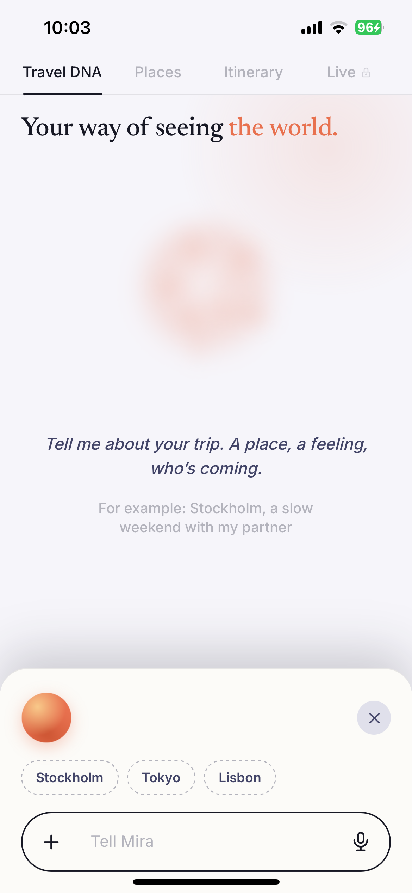
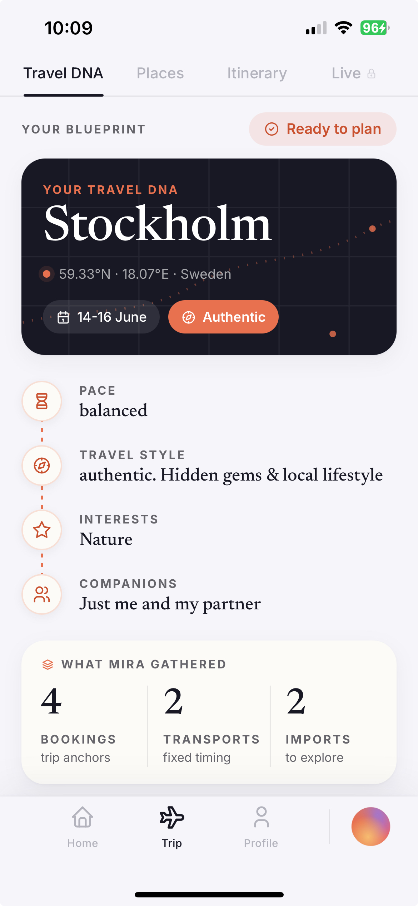
What if exploring also told you what's worth it?
People already explore in three ways: maps, visual scrolling, search, but scattered across apps and with no reason to trust. Places brings them into one, and adds what's missing.
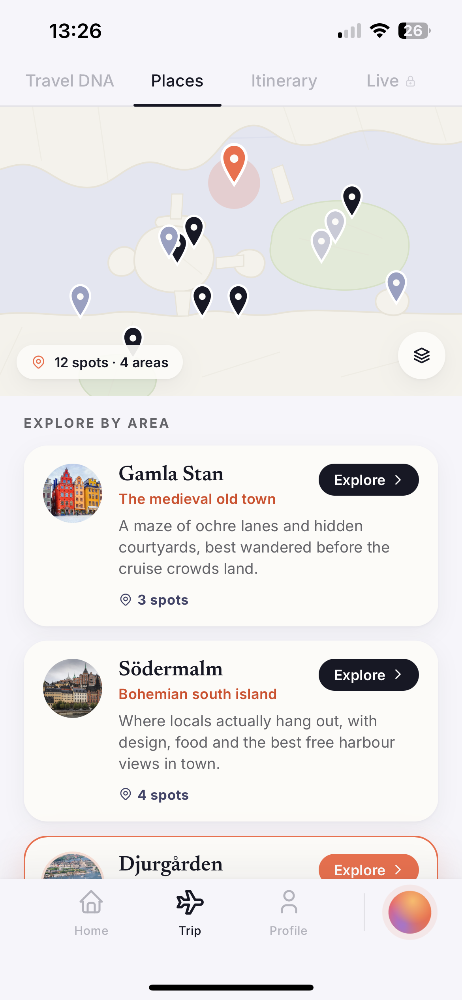
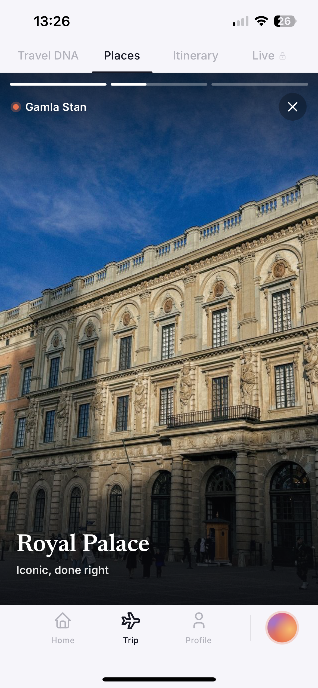
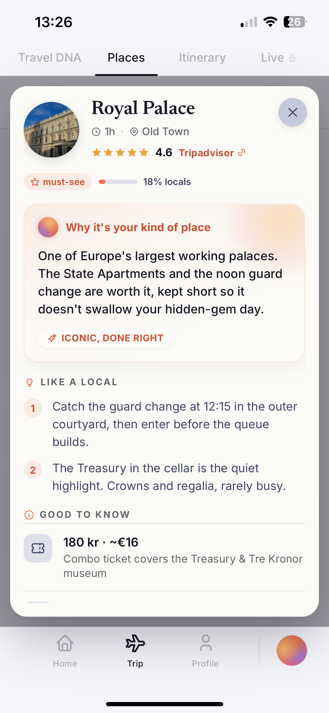
The map. Like the tool people use most to picture a new city.
Areas, not chaos. Spots grouped by neighbourhood, so you explore by zone.
The visual scroll. The Instagram and TikTok habit of seeing a place before deciding.
Curated, not endless. Real images of the actual spots, not a viral, over-touristy feed.
The deep search. Hours, prices, what it's like.
The part you can't Google. Why Mira picked it for you, like-a-local tips, and a Tripadvisor link for the rest.
A day that fits how you travel, not a timetable to obey.
A good day isn't packed to the minute. Mira shapes each one around how you actually want to travel, and leaves it open for you to change.
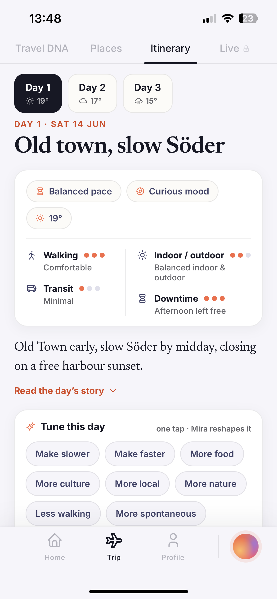
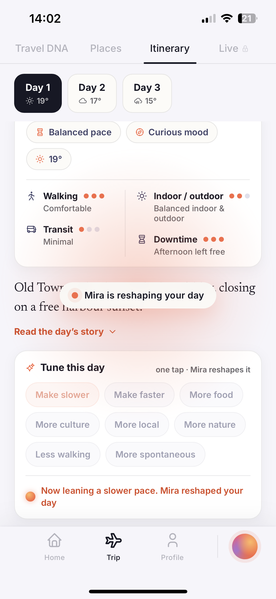
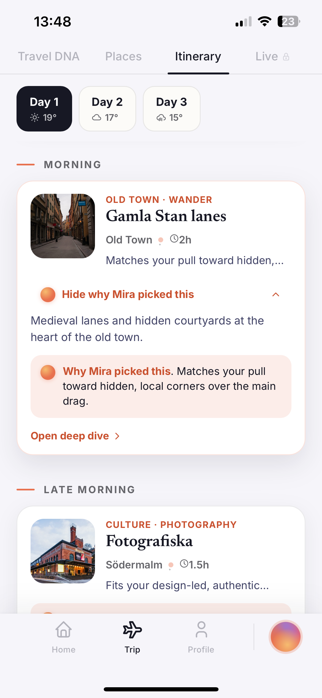
What happens when the day doesn't go to plan?
You've explored, you've got your days. Then it rains, a bus is late, a queue builds. Most apps send a notification and leave the problem to you. Mira handles it while you're out.
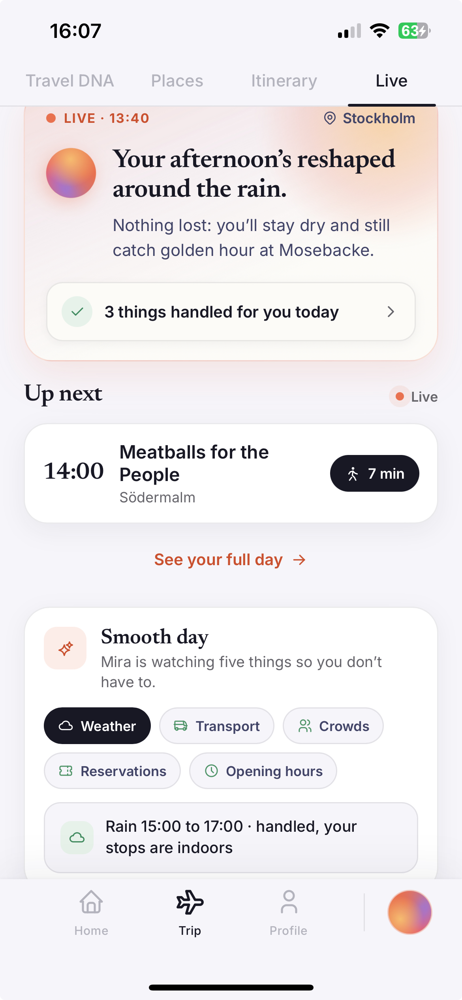
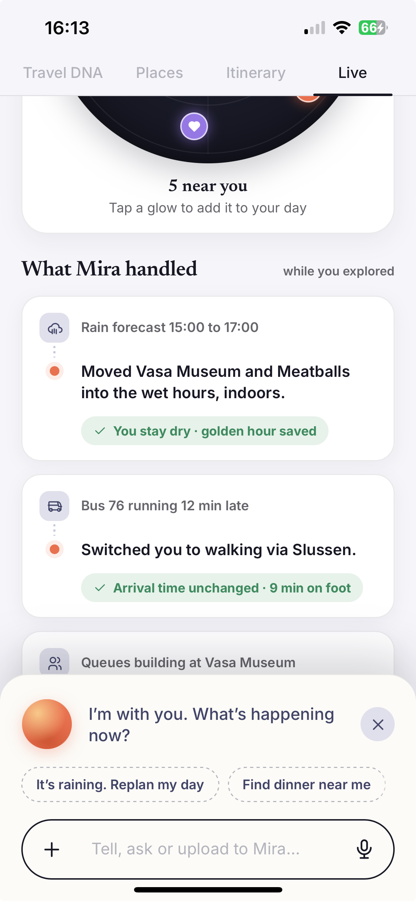
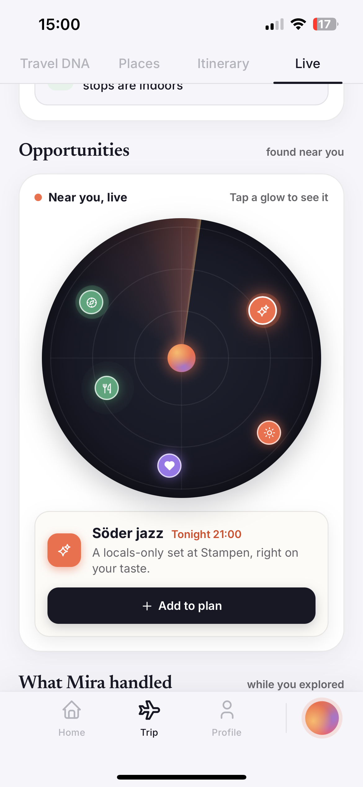
After all the planning, a place that simply feels like yours.
The Home is where it all settles: your trips in motion, the places you've been, and what's next. No dashboards, just your travel life at a glance.
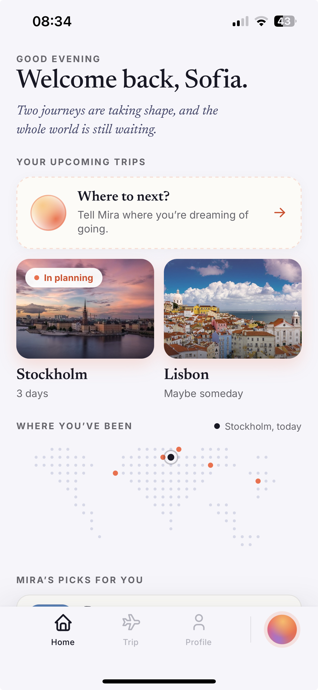
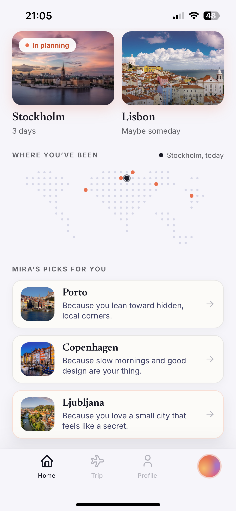
One Mira, everywhere
Access from a single anchored bar, identical on every screen, only the contextual question changes. You type, and the interface shifts in place. No empty chat box.
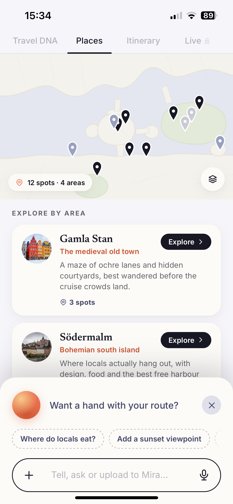
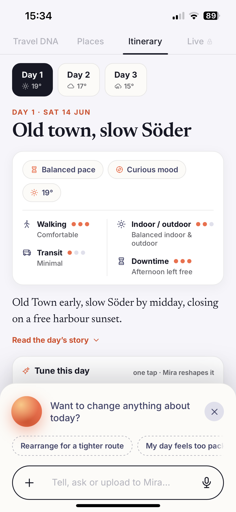
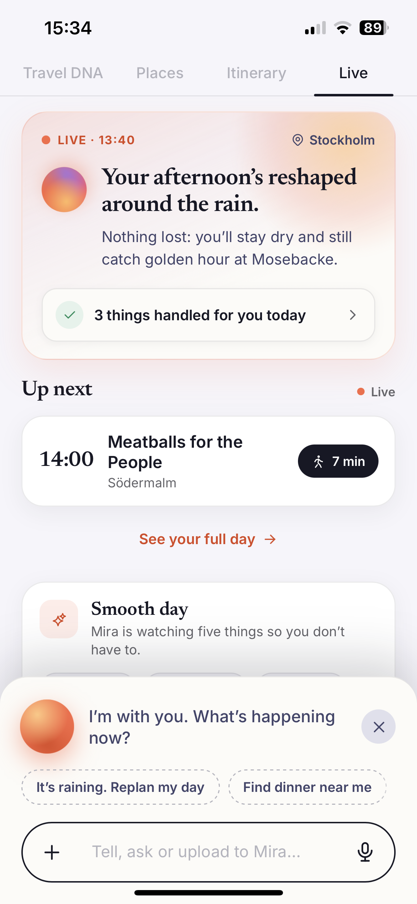
What changed, and why
Testing the prototype with people, without explaining it, surfaced two changes that reshaped the experience.
Mira sat in the middle of the navigation bar, half tab, half button.
That in-between spot didn't say what it was, not clearly a section, not clearly a chat.
I moved it out into its own persistent spot, present on every screen.
Now it reads as a companion you can talk to anytime, not a place you visit.
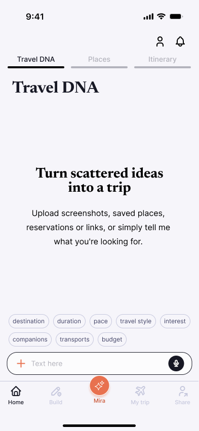
The journey was split into two tabs:
- Build held everything about preparing the trip: finding places and building the itinerary.
- My Trip held the live, in-trip part.
But to users that separation made no sense: planning and traveling are one continuous experience, not two modes.
I merged them into one continuous flow: Travel DNA to Places to Itinerary to Live.
Preparing and living the trip now sit in the same journey, not in separate sections.
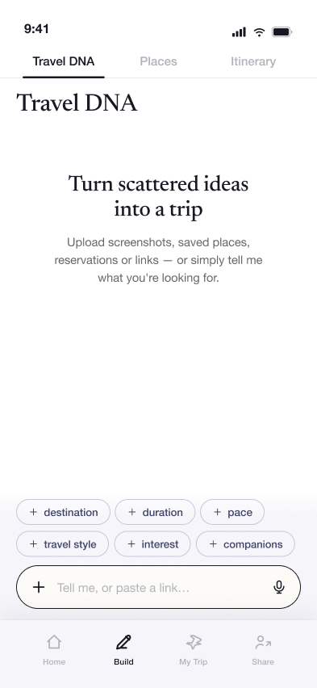
You see the world. Mira sees to the rest.
Scan to try Mira
For fullscreen: Share → Add to Home Screen